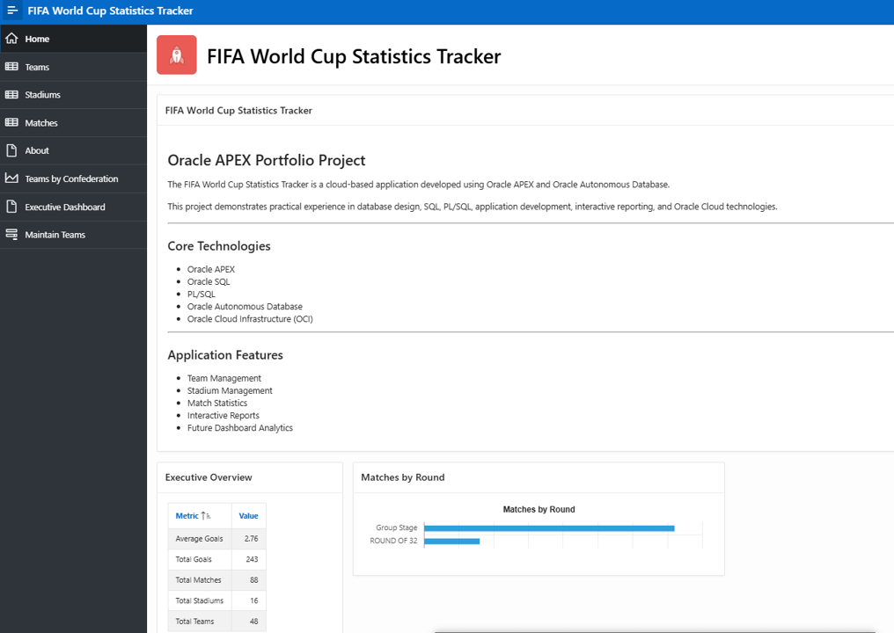
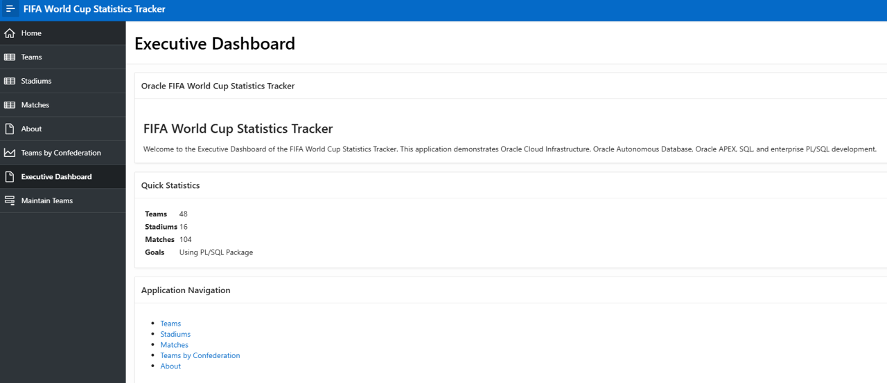
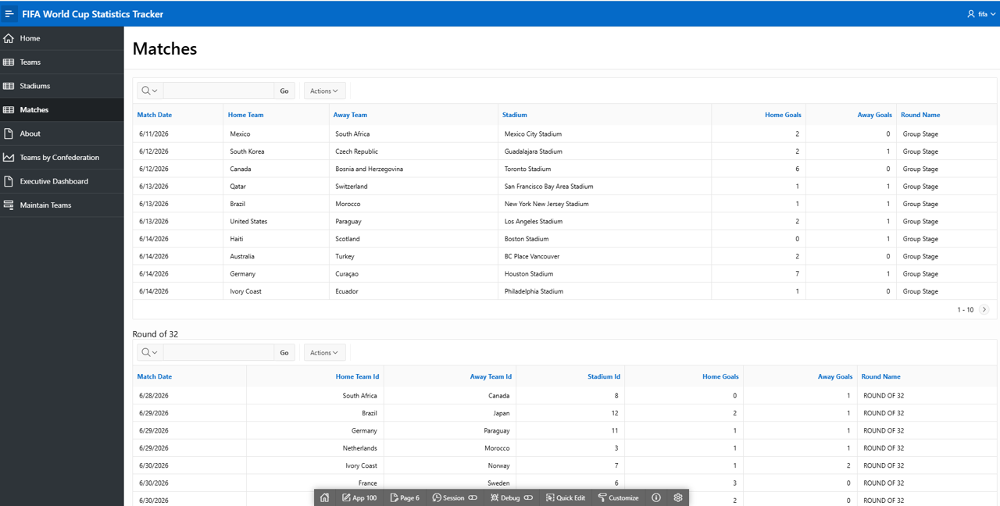
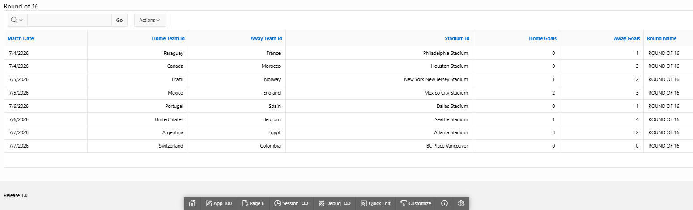

This section presents representative screenshots of the FIFA World Cup Analytics Dashboard developed using Oracle APEX. The application demonstrates executive dashboards, interactive reports, data visualization, and enterprise application development practices.
The application landing page provides centralized navigation to the dashboard, team management, stadium information, match schedules, and reporting capabilities.

Executive dashboard displaying tournament key performance indicators, charts, and summary analytics designed to provide decision-makers with an overview of tournament activity.

Interactive report providing tournament fixtures, participating teams, stadium locations, match dates, scores, and filtering capabilities for business users.

